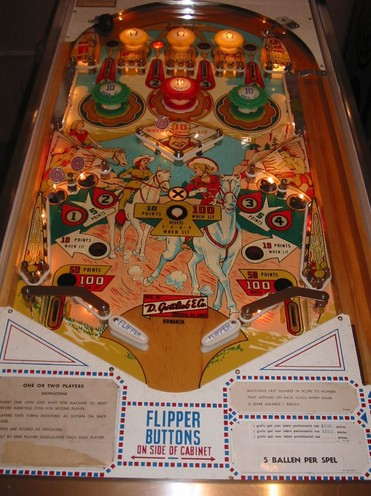

1-point switch hits anywhere in the game rotate which top lane is lit orange. Top lanes score 5 points, or 50 when lit orange. The yellow passive bumpers at the top of the game score 1 point, so the lit orange top lane will move around as the ball rattles around the top of the playfield.
The main scoring feature is the set of 1-2-3-4 numbers around the playfield. Numbers can be earned at the top lanes or the standup targets in the lower half of the playfield. The standup targets always score 5 points. Make a lane or hit a target with a lit number to collect that number and unlight it.
Collecting both the 1 and 2 lights the right green pop bumper and right slingshot for 10 points instead of 1, and lights the right out lane for 100 points instead of 50.
Collecting both the 3 and 4 lights the left green pop bumper and left slingshot for 10 points instead of 1, and lights the left out lane for 100 points instead of 50.
Collecting alll of 1-2-3-4 lights the wall switches in the center diamond structure for 10 points instead of 1, and lights the center rollover button for 100 points instead of 10. Pressing the center rollover button when lit resets the 1-2-3-4 sequence, which unlights all green pop bumpers, slingshots, and out lanes.
The status of the 1-2-3-4 progression is preserved across balls, players, and games.
There are no in lanes. Slingshots are at the edges of the table rather than directly next to the flippers. There are no gates or center posts (at least not on an unmodified copy, some copies of Bonanza seem to have a center post added as a modification). There is no end of ball bonus, extra ball feature, or playfield Special. Tilt ends game, but only for the player who tilted if a 2-player game is being played.
The below picture of Bonanza's playfield was taken from the Internet Pinball Database, where it was procided by Miroslaw Adamczewski.
